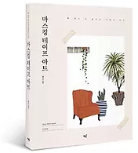
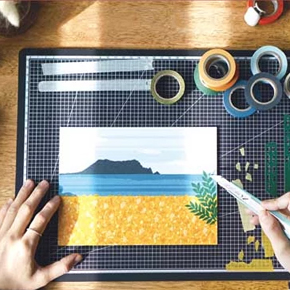
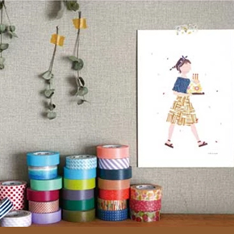
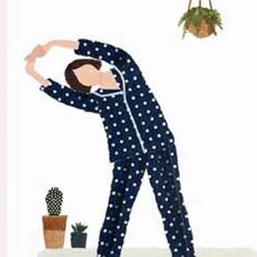
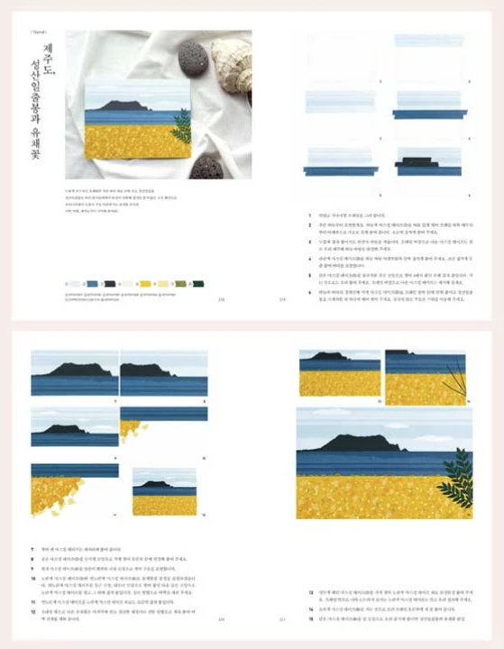

1일#하루 책소개
마스킹 테이프 아트
종이 특유의 깔끔하고 부드러운 색상과 겹쳐 붙이면 아름다운 그라데이션까지, 사람들이 마스킹 테이프를 사랑하는 이유는 참 다양합니다. 이제 마스킹 테이프를 손으로 찢거나 칼로 오려 붙여 물감처럼, 색연필처럼 사용해 보세요. ‘마스킹 테이프 아트(masking tape art)’란 마스킹 테이프로 완성하는 일러스트 혹은 미술 작품을 말해요. 국내 최초 마스킹 테이프 아티스트 채민지 작가는 마스킹 테이프를 찢고 오리고 붙이는 단순한 손작업으로 감각적이고 트렌디한 일러스트를 완성합니다. 아직은 처음 접하는 마스킹 테이프 아트가 생소할 거예요.

- 새로운 취미가 필요한 당신에게 소개합니다.+ 더보기
- 
- 
- 
‘마스킹 테이프 아트(masking tape art)’란
종이 특유의 깔끔하고 부드러운 색상과 겹쳐 붙이면 아름다운 그라데이션까지, 사람들이 마스킹 테이프를 사랑하는 이유는 참 다양합니다.
